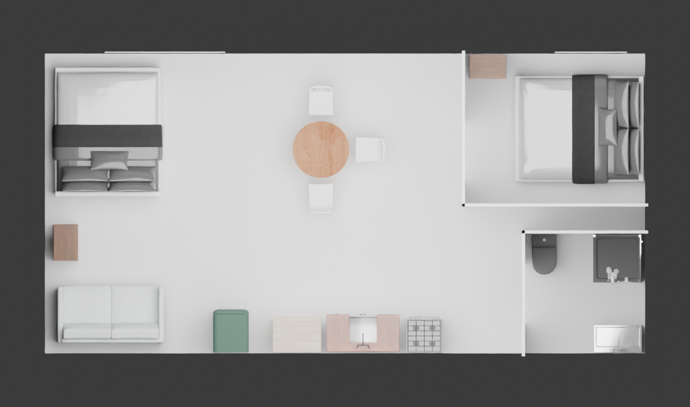
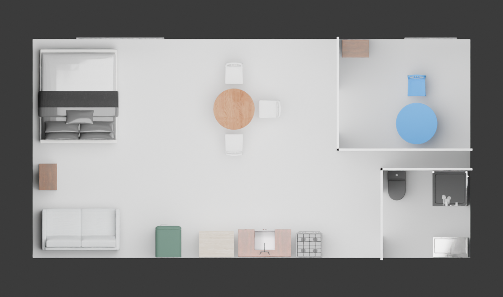

研究者重建住宅的用途转换开发实验。不是实测原住宅、从空房生成、神经Agent结果或已成立的CVPR贡献。目标住宅自身最终方案与动作未输入提案器。两组的原生终态和GLB完全相同。
| 实现 | 普通搜索 | 案例条件排序 |
|---|---|---|
| v1有限检查后采纳 | 0 / 24 | 0 / 24 |
| v2首次有效的原生检查序号 | 3 | 3 |
| 选中候选 / 总候选 | 615 / 1120 | 615 / 1120 |
| 原生对象：初态→终态 | 29→30 | 29→30 |
| 操作 | 允许移出1床，加入1桌1椅 | 相同 |
| 其余完整保留的对象记录 | 28 | 28 |
| 办公室代理接近检查 | 3/3 | 3/3 |
| 保留用途代理接近检查 | 44/45，无退化 | 44/45，无退化 |
| 最终家具 / 结构表面相交 | 0 / 0 | 0 / 0 |
保留用途中，0.6米方形代理到淋浴点的原有失败未解决；目标住宅的设备、人体操作、隐私和旧床移出处未知。基座高度检查不是物理稳定性，桌面可用面积/人体工学没有完成验证。
俯视图仅隐藏屋顶与外墙，保留内部隔墙；蓝色为新办公桌椅，不代表原材质。两组结果相同，分别列出仅为明确方法对应。


Pine的已有工作面与新工作面共存原则、TM8的持续卧室需求核查，经过本任务条件解释后，落实成了普通任务已要求的“保留餐位、不保留明确释放的旧床”。在所有可进入原生验证的候选上，案例惩罚为常数，故实际访问顺序相同。完整1120项列表在被拒域中有重排，不能声称所有排序都相同。不同执行次序和缓存状态下的一次耗时也不构成效率优势。
原先v1保留：两组各24次均失败，没有采纳。v2是看到失败后一次明确记载的公共普通修正：预筛座位后方人体代理格点占用；没有改最终阈值、资产、候选空间或24次预算，也没有第三轮扩搜索。因此v2是开发修正结果，不是独立留出测试。
最近邻：Function2Scene已使用住户/活动条件和工具修复；Pine与TM8是设计报告，不是对本实验结果的人评。本轮未取得SceneExplorer全文，不声称已完成全领域排重。
{
"v1_search_wall_seconds": 24.63288600742817,
"v2_search_wall_seconds": 21.35808353871107,
"v2_arms_seconds": {
"B0_task_aware_search": 2.0480783507227898,
"B1_case_condition_order": 0.977693123742938
},
"native_export_and_cold_restore_seconds": 73.57902185246348,
"peak_search_rss_kib": 1526516,
"extra_paid_API_calls": 0,
"local_neural_inference_calls": 0,
"training_updates": 0
}当前阶段未开启新资源。几何持久文件是17.33MB的gzip，双方指向同一份已证实相同的内容；未用硬链接复制旧证据。可打开的未压缩GLB位于/dev/shm，属临时路径；重启后按命令从持久文件解压。相同几何仅保存一份，双方完整状态和原生资源清单各自保留。
研究继续，但这轮不增加该住宅预算、训练或把普通修正包装成创新。下一步应检验能改变有效决策/搜索代价的具体机制；从需求自动生成整屋、真实神经方法和独立房间效果仍未验证，目标尚未完成。